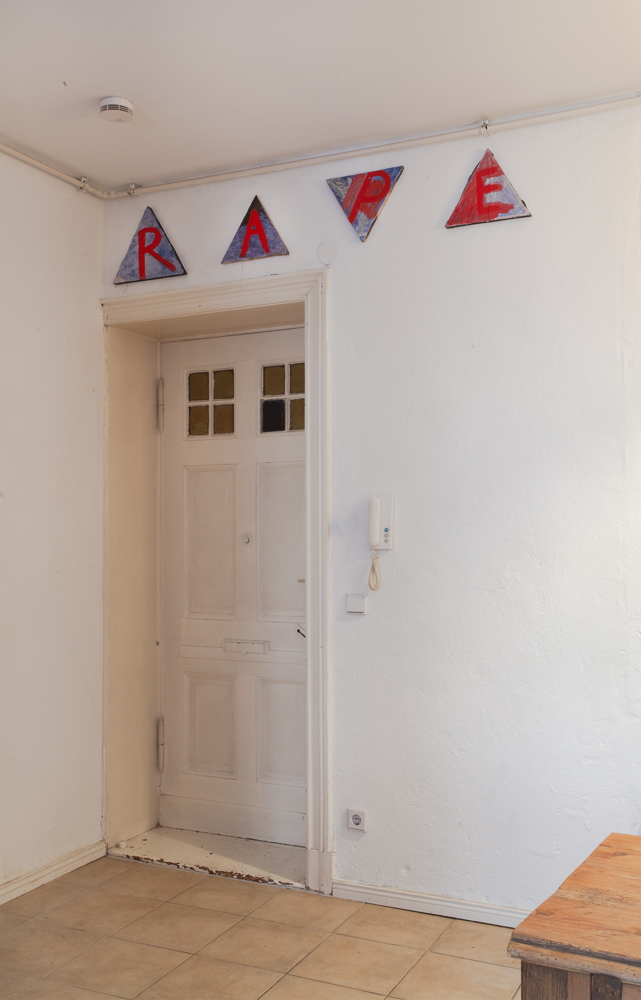
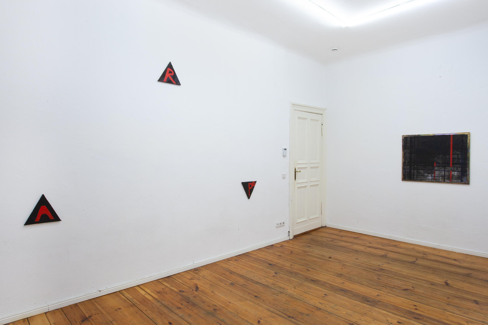
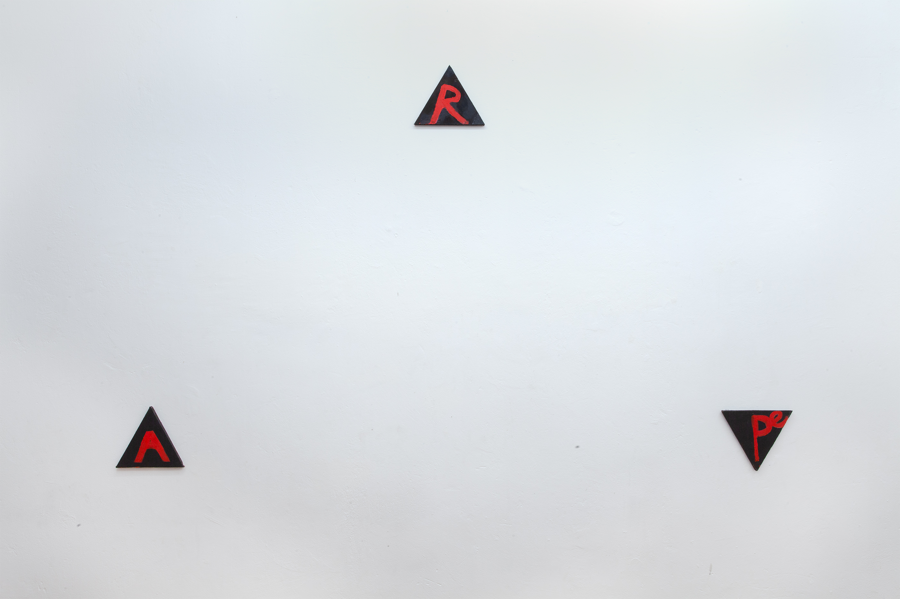
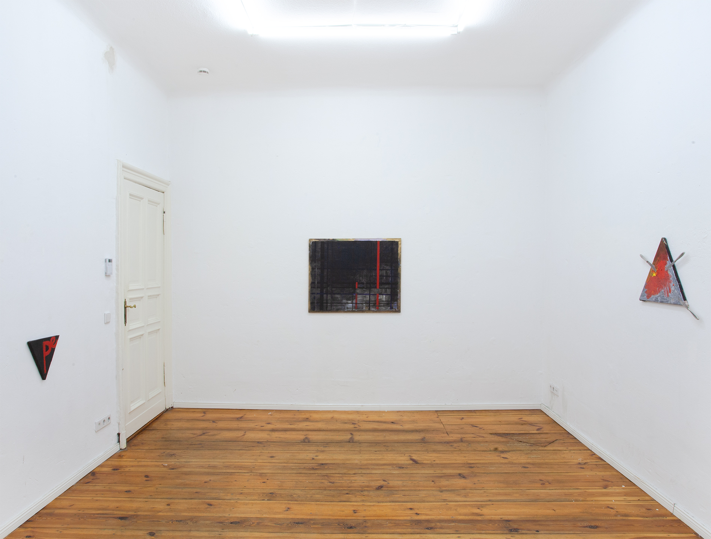
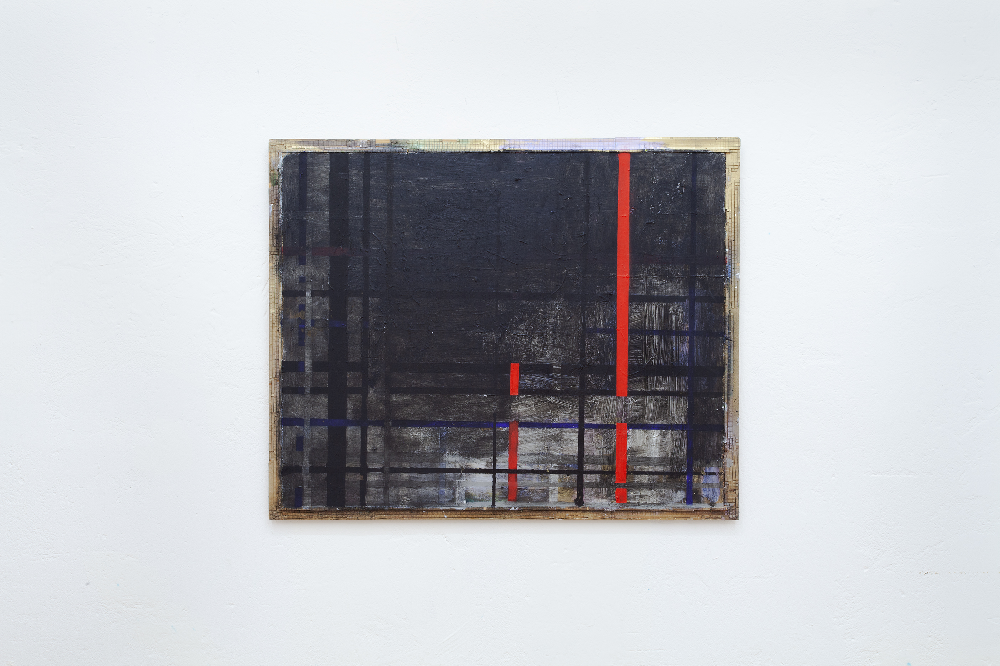
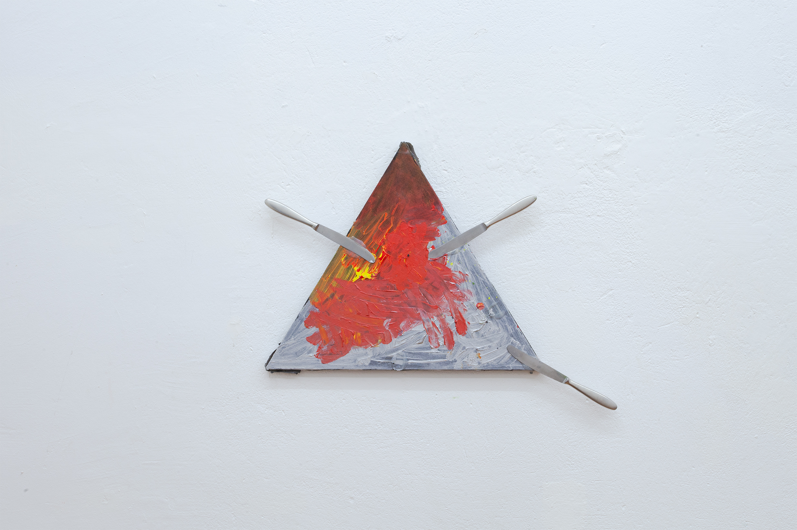
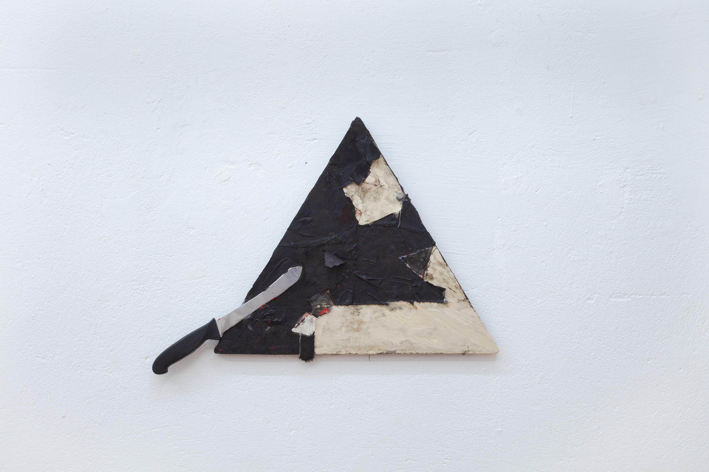
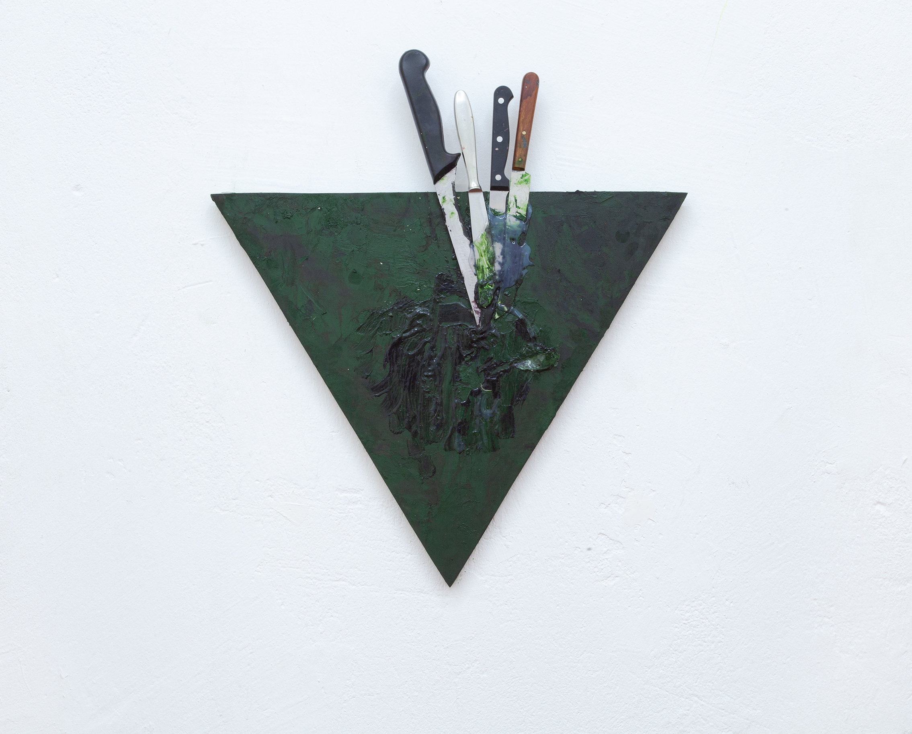

Text Paintings with Abstraction, 8.8.2025
Nicola Blumenthal








Naming an act of violence, the word at the centre of this show may conjure intense audience reactions. This is due to the severity of what the word denotes, but also the mystery of its apparition in the gallery. In an art world obsessed with biography, one is tempted to infer a link between artist and word - to read it as a confession of experience, perhaps, the child-like writing a traumatised script harking back to pre-rape; or, the knives of a post-rape fantasy. But no evidence of a biographical link exists. Because there are no further clues to the meaning of the word in this context, the highly-charged sign is tinged by meaninglessness. Unexplained, 'R-A-Pe' or 'R-A-P/R-E' risk frivolousness; yet they also name a different sort of operation: to use a form without another's consent. Via the bashed-up nocturnal Mondrian, the exhibition pushes into the territory of Mondrian, Levine, and the bruised grids of Koether with her bloodsoaked triangles, which are of course also Blinky's. Here, the anxiety of influence is born from the same source as the paranoiac search for the author of the abstract word that hangs over the show.
07.08.2025